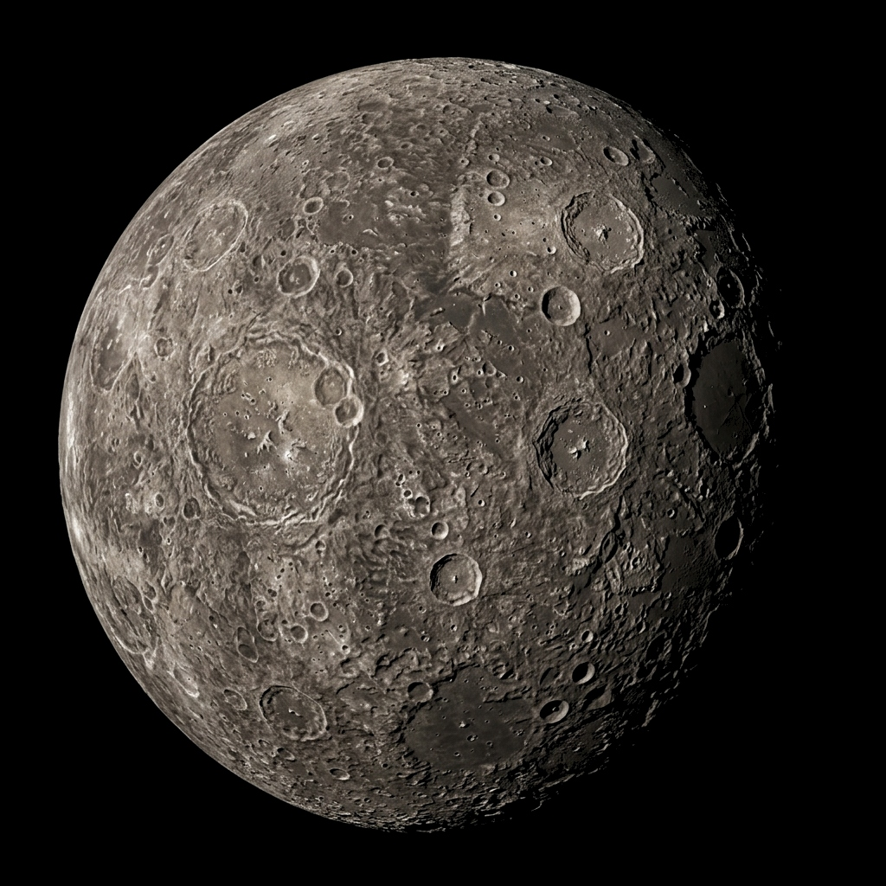
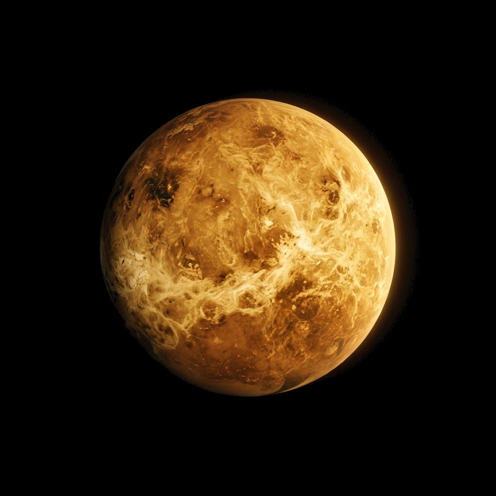
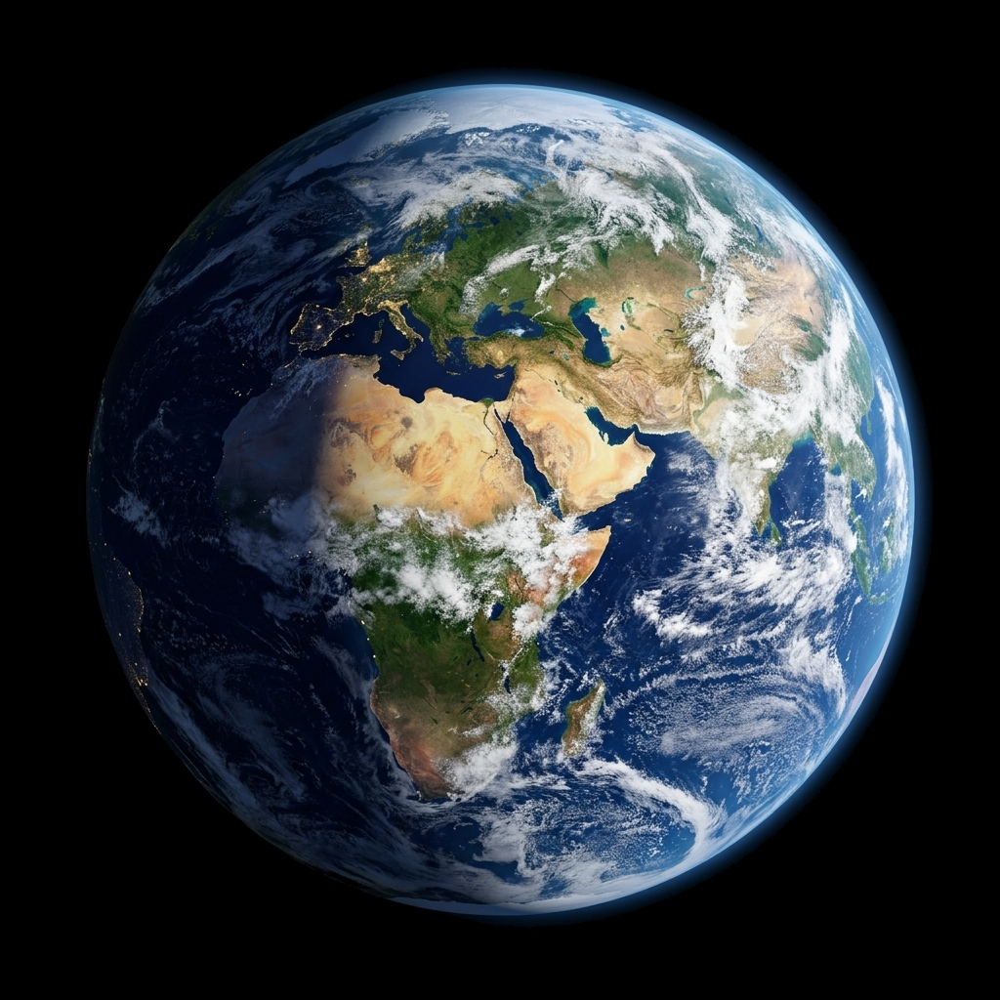
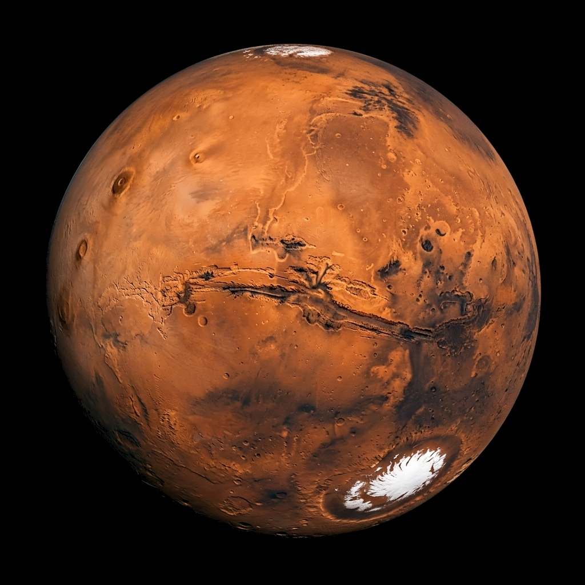
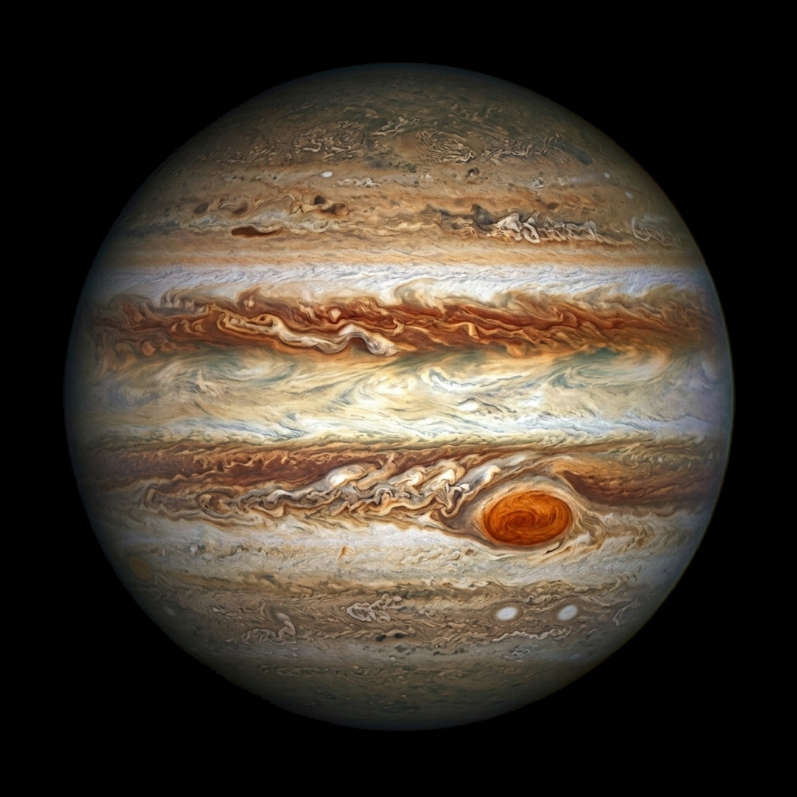
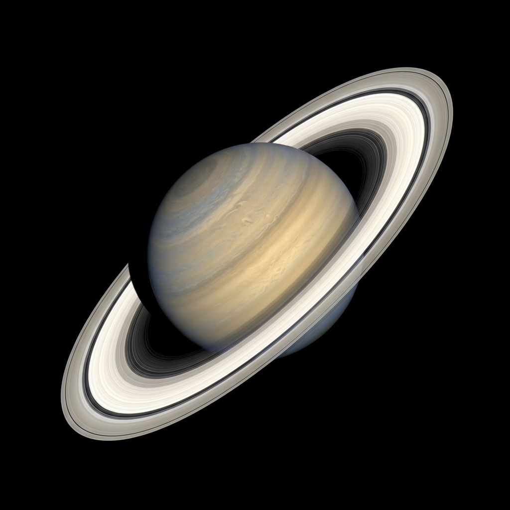
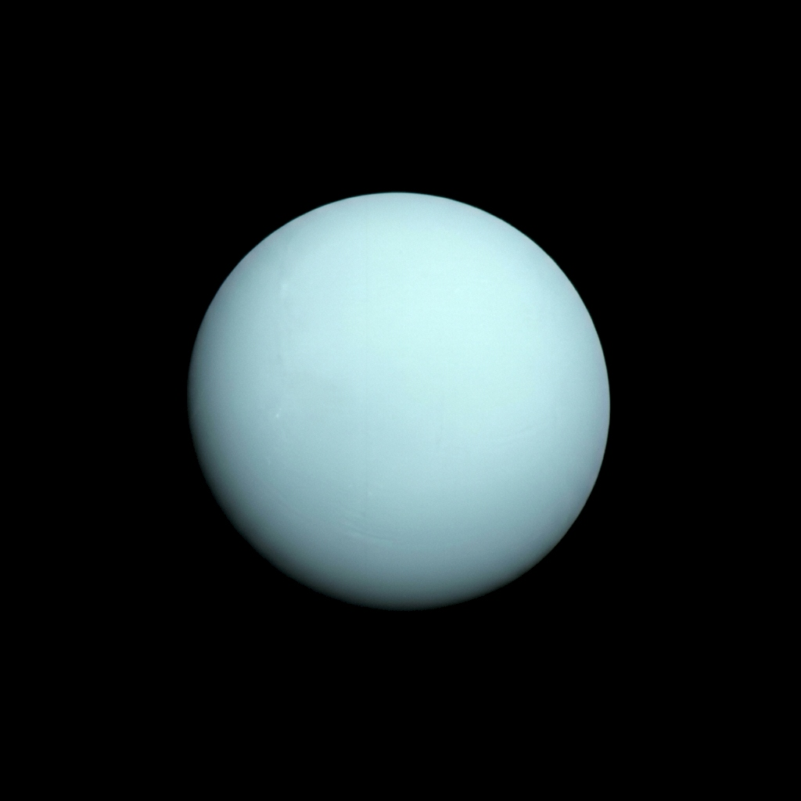
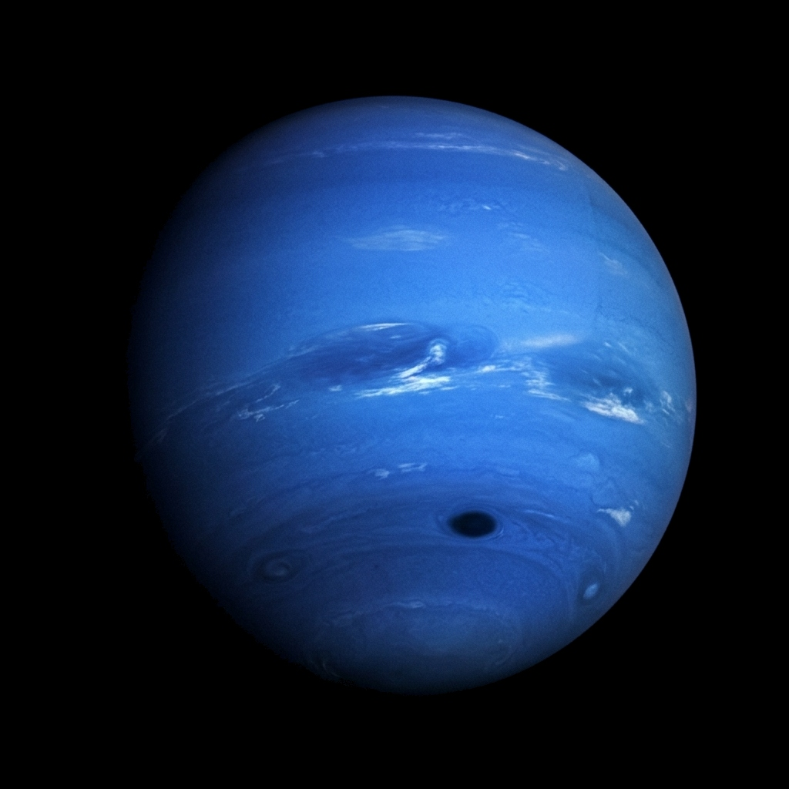

MERCURY
The closest planet to the Sun and the fastest runner in the solar system, hurtling at 47 km/s. With virtually no atmosphere, temperatures oscillate violently from boiling day to liquid-nitrogen cold night.

VENUS
Earth's twisted twin is the hottest world in our system. Shrouded in suffocating carbon dioxide clouds raining sulfuric acid, its runaway greenhouse effect keeps surface temperatures hot enough to melt lead.

EARTH
Our cosmic sanctuary. The only celestial body known to harbor conscious life, blessed with liquid water oceans, an active magnetic shield, dynamic plate tectonics, and a vibrant, breathable atmosphere.

MARS
Colored by iron-oxide dust, Mars features the largest volcano in the solar system (Olympus Mons, 22 km high) and the gargantuan Valles Marineris canyon. Prime destination for humanity's next interplanetary leap.

JUPITER
More massive than all other planets combined, Jupiter acts as the solar system's gravitational shield. Its swirling cloud bands contain the Great Red Spot — an anticyclonic storm larger than Earth raging for centuries.

SATURN
Famous for its majestic ring system stretching over 282,000 km yet averaging only 10 meters in thickness. Composed predominantly of billions of pristine water-ice particles, rocky debris, and cosmic dust.

URANUS
A calm, pale aquamarine ice world rich in methane, water, and ammonia ices. Unique among all planets, Uranus spins completely on its side with an axial tilt of 98°, likely the result of an ancient catastrophic collision.

NEPTUNE
The most distant major planet in our solar system. Bathed in vivid azure blue, Neptune is an extreme supersonic tempest world with the fastest recorded winds anywhere, screaming past 2,100 km/h.